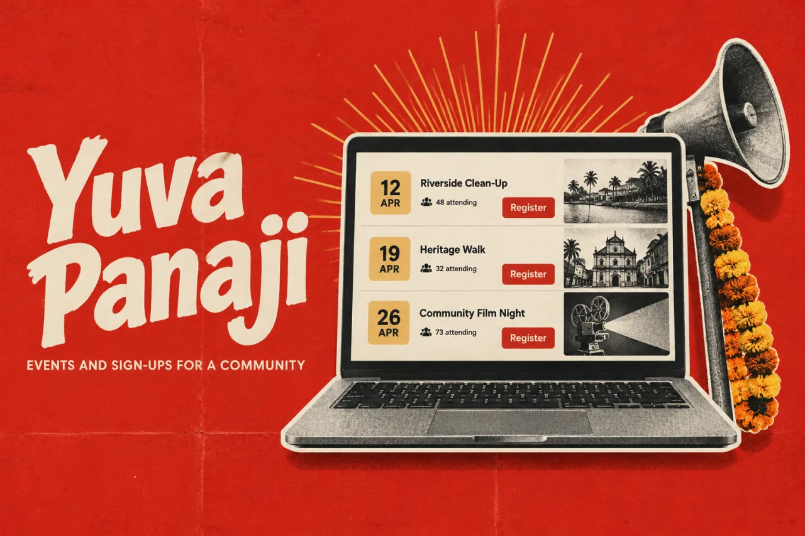
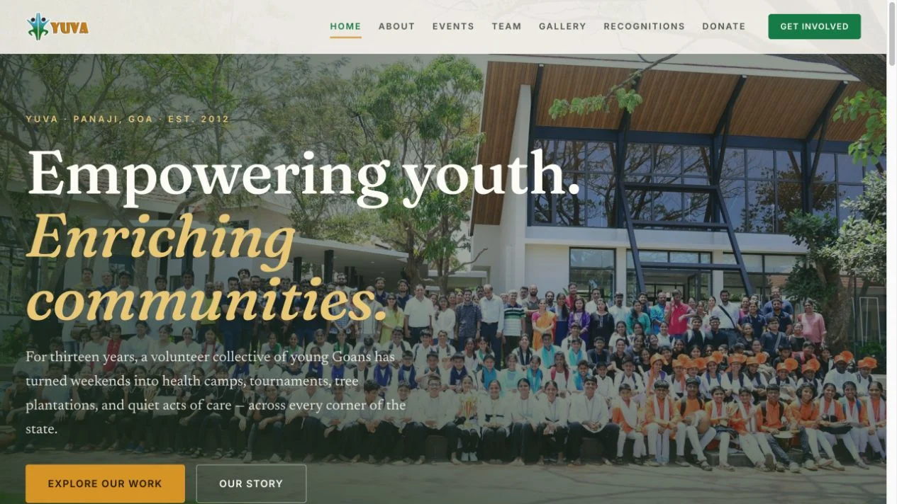

Yuva PanajiProduct story · 4 min read
An event page is only the beginning.
A community website and operations portal linking event discovery with registration and committee workflows.
Read the case study

Original public homepage for Yuva Panaji. Community activity introduces the organisation before visitors enter its event and registration routes.
View full size ↗01 The problem
Can one action stay useful all the way to the event desk?
A community organisation needs a public account of what it does and a practical way to run the next event. The reviewed Yuva source brings those responsibilities together: public discovery and registration on one side, event administration and committee workflows on the other.
Designed for Event participant & committee volunteer. Carry the same event information from discovery into check-in.
User context Design assumption
One person registers; another prepares the roster and attendance desk.
- The friction
- Public sign-ups and operational lists can become disconnected.
- Design implication
- Design the participant and volunteer journeys together.
Example situation · illustrative scenario. Imagine someone finding an event and registering. Their next step is attendance. For the committee, that same action starts a chain of rosters, corrections, desk sheets, and follow-up.
02 The direction
Registration continues at the desk
The public journey and the operational record are parts of the same service. The handoff matters as much as the page.
Product artifact · public and admin workflows
My direction. I mapped how public discovery and registration continue into committee workflows, including the work that happens away from a screen.
Process and product scope
I mapped the service from public event discovery and registration through committee review and the attendance desk. Participants and volunteers need different views of the same event information.
The design priority is continuity: information entered on a registration form should remain useful when a volunteer checks someone in, corrects a record, or prepares a printed list.
- 2
- connected surfaces
- Public
- events and registration
- Private
- committee operations
- Discover
Find the event and its details.
- Register
Submit the information the event actually needs.
- Prepare
Carry it into a usable committee roster.
- Check in
Support attendance at the event desk.
03 The outcome
The public event and the work behind it.
I connected public event information and registration with the committee’s follow-up work: rosters, corrections, exports and attendance. The public website and operations portal have different jobs, but the information needs to carry from one to the other.
More about the experience
- A public front door. The community website introduces the organisation and its work.
- An operational continuation. The case follows the event into registration and committee tasks.
04 Design decisions
Connect public events to the work behind them.
Open a decision to see the reasoning and trade-off.
01Connect discovery to the event’s operational record
The public registration journey and admin roster belong to the same event model.
Why this matters. A committee should not have to reinterpret a public sign-up into a separate attendance workflow.
The trade-off. Custom events need flexible fields without making every registration form equally complex.
02Give public and committee users different surfaces
Visitors see event and organisation information, while management workflows sit behind admin access.
Why this matters. The interface should reflect different responsibilities and information needs.
The trade-off. A clean separation in navigation is only part of the requirement; permissions and data handling must be verified independently.
03Include the work that happens away from the screen
The documented system supports desk attendance sheets and spreadsheet exports.
Why this matters. Community operations often happen at an event desk, where a printable list can be more useful than another dashboard.
The trade-off. Exported files can become stale. The workflow should explain when a printout was produced and how corrections return to the system.
05 Reflection
Design the next person’s task into the current person’s action.
I would review the handoff at an actual event: who checks a registration, who corrects it and what the attendance desk receives. That is where duplicate entry and outdated lists become visible.
What I would evaluate next proposed work
- follow one event from discovery through registration, roster correction, and check-in with both participant and committee perspectives.
- duplicate corrections, incomplete registrations, and handoff effort at the event desk, with a documented baseline.
A PDF deck you can work with again.